For iPhone and iPad
Sketch FEA
Draw a part, see the stress.
An educational app for learning finite element analysis (FEA). Draw a part, hold it, load it or heat it, pick a material, and see the displacement, stress, and temperature as you draw.
Requires iOS or iPadOS 16.4 or later. In English.
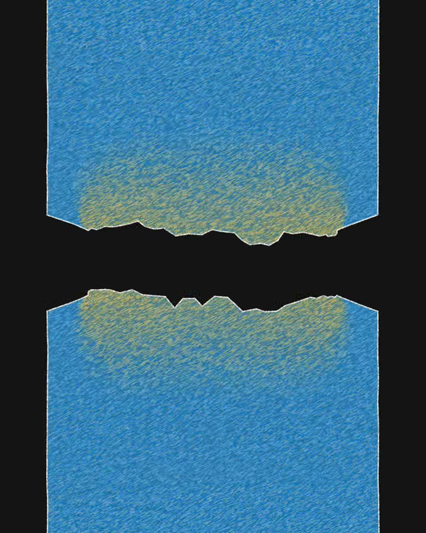
In the app
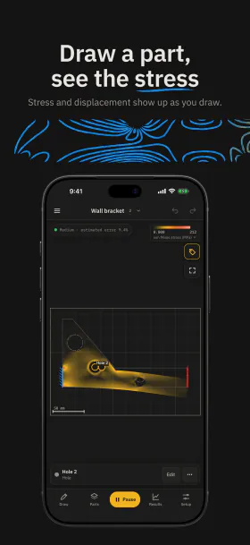
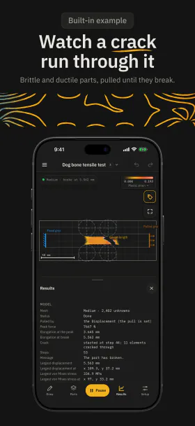
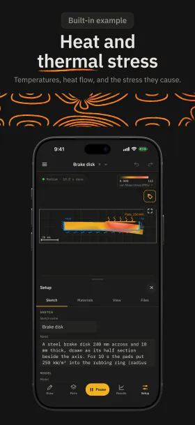
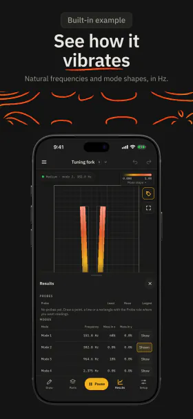
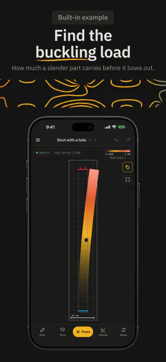
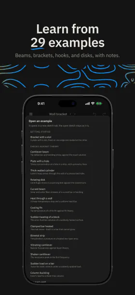
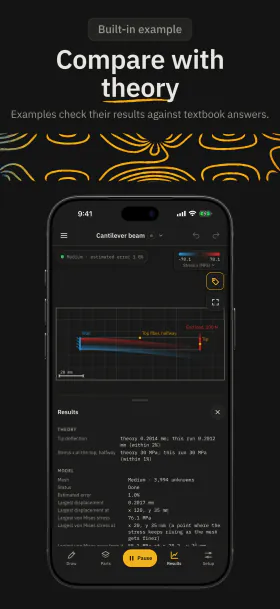
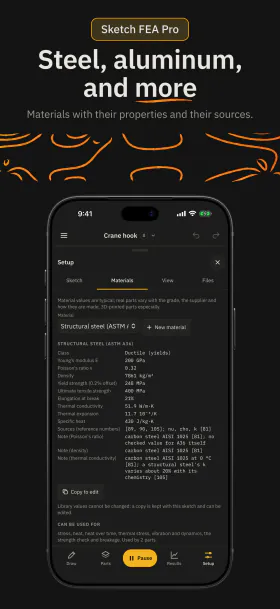
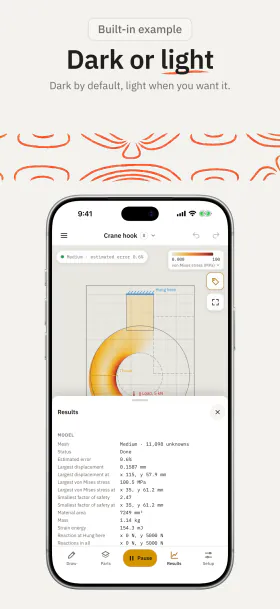
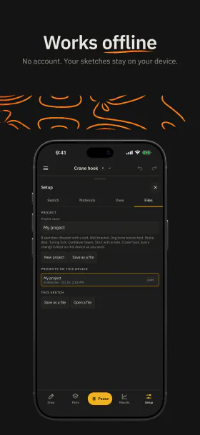
See it in action
A short video of the app on iPhone, without sound, with controls to play and pause it.
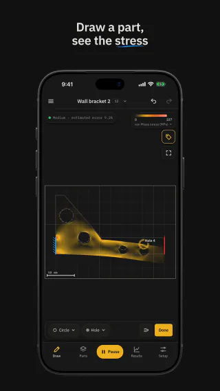
In the video
- A hole is drawn in a wall bracket, and the stress around it changes at once.
- A photo of a sketch drawn on paper is read, shown sped up, and its parts are checked on the review screen.
- In the Dog bone tensile test example, an aluminum specimen is pulled until it tears.
- In the Tuning fork example, the tines sway in their first mode of vibration.
- The list of the 29 examples, which run without a subscription. Your own photos and most parts need Sketch FEA Pro.
Draw it
Draw lines, rectangles, circles, curves, freehand strokes, and dimensions in mm, with snapping, undo, and redo. Type a dimension to resize a side.
Give each part a role: the solid part and its holes, the supports that hold it, the loads that push on it, and the temperatures and heat that reach it. Each solid has its own material.
Model a plate of set thickness (plane stress), a slice of a long part (plane strain), or the section of a round part (axisymmetric).
The part
- Solid
- Hole
Supports
- Fixed
- Pin
- Roller
- Symmetry
- Displacement
Loads
- Force
- Pressure
- Gravity, acceleration, and rotation
Heat
- Temperature
- Heat flux
- Convection
- Heat source
Analyze it
The solver works while you draw and edit. A quick result shows at once, and a finer one replaces it when you stop.
- von Mises stress MPa
- Displacement mm
- Temperature °C
- Heat flux W/m²
- Factor of safety
- See the deformed shape, mode shapes, and the crack as it grows.
- Read probes at a point, along a line, or over an area.
- Read the largest values and where they are, the reactions at the supports, frequencies in Hz, the buckling load, and the peak force.
- Work in SI units (mm, N, MPa, °C) or US customary units (in, lbf, psi, °F).
Nine analyses
- Static stress Displacement, stress, strain, and the factor of safety.
- Heat Steady temperatures and the heat through each edge.
- Heat over time Temperatures as they change from a uniform start.
- Thermal stress The stress that a temperature change causes.
- Vibration modes Natural frequencies and mode shapes.
- Shaking The response to a force that swings at one frequency.
- Dynamics over time The motion after a sudden, ramped, or pulsed load.
- Buckling The load at which a slender part bows out.
- Breakage A rising load until the part yields, cracks, and breaks.
Learn with 29 examples
Each example has notes on what to look for, the theory value where there is one, and what to try next. All 29 are free to run and explore, in every analysis.
Pick from 18 materials, from structural steel and aluminum 6061-T6 to ABS, PLA, glass, and concrete, each with its properties and their sources.
Checks against theory
- Cantilever beam
- Plate with a hole
- Thick-walled cylinder
- Rotating disk
- Curved beam
- Heat through a wall
- Cooling fin
- Sudden heating of a block
- Clamped bar heated
- Bimetal strip
- Vibrating cantilever
- Shaken cantilever
- Sudden load on a bar
- Column buckling
- Bar past yield
Applications
- Dog bone tensile test
- L-bracket
- Crane hook
- Wrench
- Pressure vessel head
- Heat sink
- Brake disk
- Hot pipe under pressure
- Thermostat strip with a heater
- Tuning fork
- Bracket on a shaker
- Dropped load on a beam
- Strut with a hole
- Notched glass bar
Compare with theory
Fifteen examples follow cases with a known answer from mechanics and heat transfer textbooks. When the run is done, the Results tab shows the theory value beside the app’s own value, and whether they agree within the stated tolerance.
Change the part and see how far the answer moves: make a beam deeper, a hole larger, or a column taller.
Theory values in the notes
- Cantilever beam Tip deflection 0.2014 mm, from the elasticity solution.
- Plate with a hole Stress at the hole 3.15 times the stress far away.
- Clamped bar heated Stress −EαΔT = −117 MPa along the bar.
- Vibrating cantilever First bending frequency 808.4 Hz.
- Column buckling Buckling load 164.45 N: Euler’s load for a fixed–free column, lowered slightly by shear.
- Bar past yield Peak force 6,200 N, the tensile strength times the area.
Free and Sketch FEA Pro
Free
- Run and explore all 29 examples, in every analysis.
- Draw your own outline and holes in a bar of structural steel or aluminum 6061-T6, fixed at one end and loaded at the other, in static stress.
- Coarse and Medium meshes.
- Projects, files, units, and the help.
Sketch FEA Pro adds
- Every support and load: pins, rollers, symmetry, set displacements, forces and pressures, and probes.
- Every material, and your own materials.
- Heat, thermal stress, vibration, shaking, dynamics over time, buckling, and breakage.
- Plane strain and axisymmetric models, and loads on the whole part such as gravity, rotation, and a temperature change.
- Fine meshes for more detail.
- Edit the examples.
- Reports with the model settings and probe readings.
Sketch FEA Pro is an auto-renewable subscription, monthly or yearly, with a free trial for eligible new subscribers. If your subscription ends, your sketches still open and run. See the prices, the subscription terms and the questions about Sketch FEA Pro.
On your device
Drawing and calculation run on your iPhone or iPad. Your sketches stay on your device.
-
Works offline
Drawing and the calculation need no connection.
-
No account
Open the app and start. There is nothing to sign up for.
-
No ads
The app shows no advertising.
-
Apple Pencil
Apple Pencil draws while your fingers pan and zoom. A keyboard, trackpad, or mouse works on iPad.
Educational use only
Sketch FEA is for education and learning only. Its results are estimates from a simplified two-dimensional model. The calculation is verified against published exact solutions and benchmark cases, such as a cantilever beam, a plate with a hole, and Euler’s column, but it has not been validated against measurements or tested in real-world scenarios. It is not a substitute for professional engineering analysis, testing, or applicable codes and standards. Do not use it to design, rate, or approve any real part, or for safety-critical, medical, or compliance decisions. You use the results at your own risk; to the extent the law allows, Journey On is not responsible for any loss or decision based on them. See the Terms of Use.
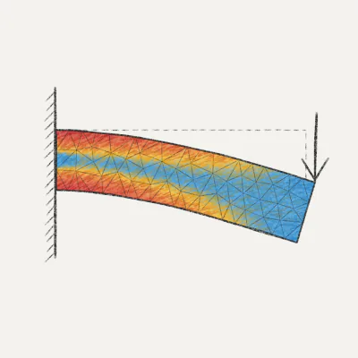
Sketch FEA for iPhone and iPad
Learn how parts bend, heat, vibrate, and break by sketching. Requires iOS or iPadOS 16.4 or later.
Questions? Email support@journeyon.co or read the support page.